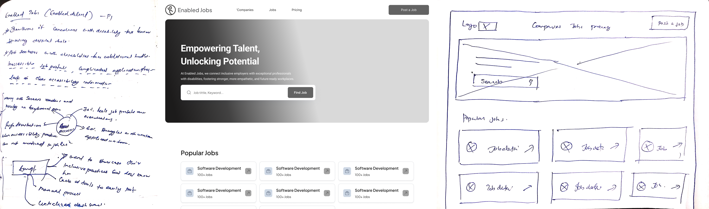
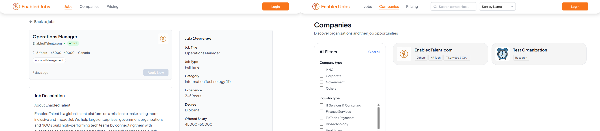

Enabled Jobs
A job portal that connects job seekers with disabilities to inclusive employers across Canada.
Project Year: 2025 — Present
1. Introduction
Enabled Jobs is a job portal developed by Enabled Talent that connects job seekers with disabilities to inclusive employers across Canada. The platform aims to simplify the job search and application process by focusing on accessibility, transparency, and inclusivity.
As the sole designer, I was responsible for shaping the entire user experience and interface design, from research and problem framing to wireframing, prototyping, and final UI delivery.
2. Background
- Nearly 8 million Canadians with disabilities face challenges using digital tools, and accessing jobs online is often complicated by inaccessible platforms and rigid processes.
- Many job seekers with disabilities struggle with poorly designed application forms, unclear job descriptions, and lack of accessibility information from employers.
- Employers also lack tools that help them post inclusive job listings or easily manage applications from candidates with accessibility needs.
The Enabled Talent team identified the need for a unified digital solution that could:
- Help job seekers find accessible and inclusive job opportunities interactively.
- Enable employers to post jobs clearly communicating their accessibility practices.
- Provide structured tools for managing applications and ensuring a smooth, inclusive recruitment process.
3. The Problem
Through early discussions and desk research, several challenges emerged:
- Many job portals lack proper accessibility features, making it difficult for job seekers with disabilities to search and apply for jobs.
- Job seekers often face complex, confusing application forms that don’t support assistive technologies (screen readers, keyboard navigation).
- Employers struggle to clearly communicate their commitment to inclusive practices and lack structured tools for managing accessible job postings.
- There is no centralized platform that brings together inclusive employers and job seekers with disabilities in an efficient, transparent way.
Core Design Challenge: How might we design an accessible, intuitive job portal that empowers job seekers with disabilities to easily search and apply for inclusive jobs while giving employers tools to post and manage job listings in a clear, accessible way?
4. The Solution
Enable Talent offers a comprehensive suite of services:
- Accessible Job Search Interface: Designed an intuitive job search system with filters such as remote work, workplace accommodations, and assistive technology compatibility.
- Simplified Application Flow: Step-by-step application forms with clear labels, keyboard navigation, and support for screen readers.
- Employer Job Posting Dashboard: Allowed employers to easily create job posts, highlight their inclusivity practices, and manage applications in one place.
- Profile & Resource Center: Enabled job seekers to build profiles with their skills and preferences, and access career resources such as resume tips and interview preparation guides.
- Accessibility by Example: Every element of the platform was designed with accessibility principles (high contrast, readable fonts, clear focus states) to set a standard for users and employers alike.

5. Design Process
Followed a human-centered design process:
- Empathize – Conducted extensive secondary research on digital accessibility barriers, industry reports, and government guidelines to understand the challenges faced by job seekers with disabilities and employers
- Define – Framed the core problem: making job search and applications fully accessible, simple, and inclusive for job seekers with disabilities.
- Ideate – Prioritized designing clear, modular features that allow employers to post accessible jobs and job seekers to apply easily.
- Wireframing & Prototyping – Built interactive prototypes that visualize the full job search and application experience, focusing on accessibility and ease of use.
- Test & Refine – Validated assumptions through heuristic evaluation and best practice research, iterating to improve clarity of application flow and visibility of accessibility practices.

6. Impact & Metrics
- Positioned Enabled Jobs as a trusted bridge between job seekers with disabilities and employers committed to inclusive hiring.
- Supported Enable Canada’s mission to promote disability inclusion in the workforce by making the job search process more equitable.
- Helped employers demonstrate their accessibility commitment transparently while simplifying compliance reporting.
- Created a scalable, modular platform ready to accommodate future services such as personalized job recommendations or assistive technology integration.

7. Key Insights & Takeaways
- Accessibility is most effective when built into the design process, not added later as a compliance measure.
- Clear, structured steps reduce anxiety for job seekers navigating applications.
- Employers need simple, guided tools that help them highlight inclusive practices without technical barriers.
- Real-world user testing validates that design decisions significantly improve confidence and engagement for both job seekers and employers.
Project Name:
Enabled Jobs
Role:
Product Designer (Freelance)
Year:
2025 — Present
Client:
Enabled Talent.
Website:
https://jobs.enabledtalent.com/
Clients & Collaborations


Copyright © All rights reserved | This template is made with by Colorlib